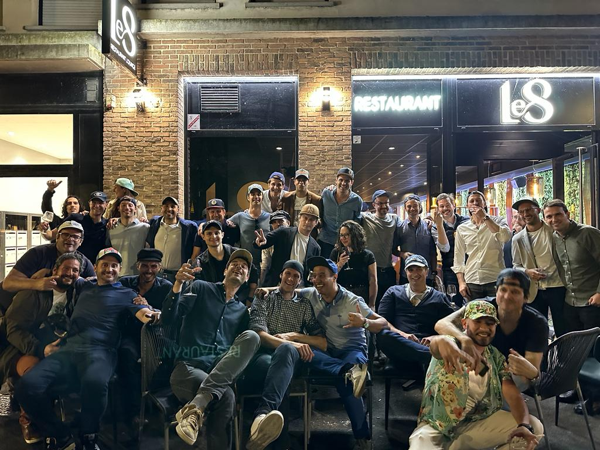

Manifeste · Avril 2026
La SRC en 12 planches
50 chirs · une base · 12 questionnaires
Étape
Manifeste
Série
12 planches
Lombaire
+ Cervical
Chirs
50+
50 chirs · une base · 12 questionnaires
C'est ça qui rend la SRC unique en France.
